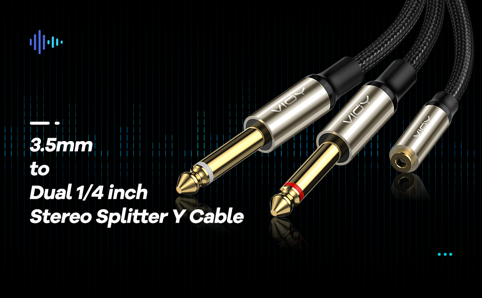
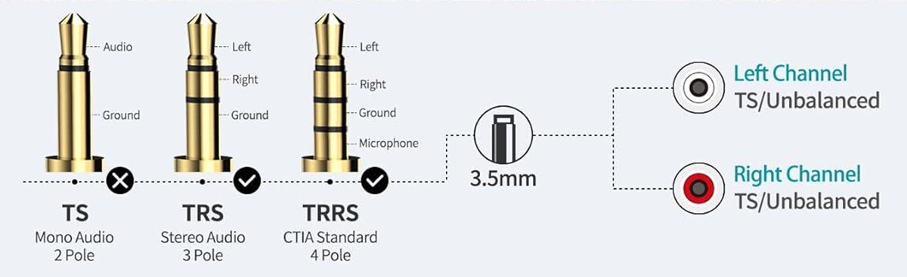
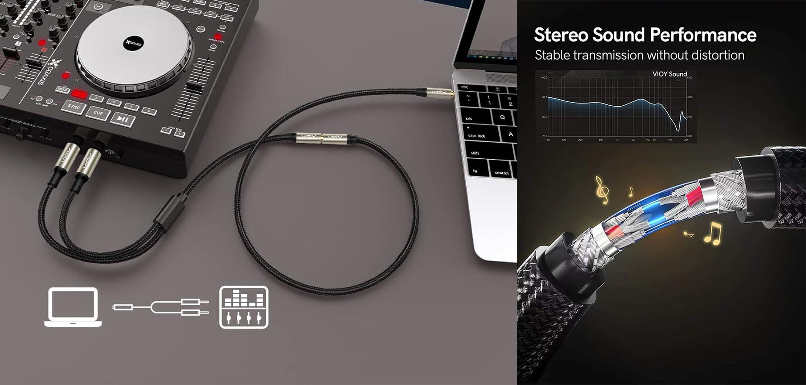
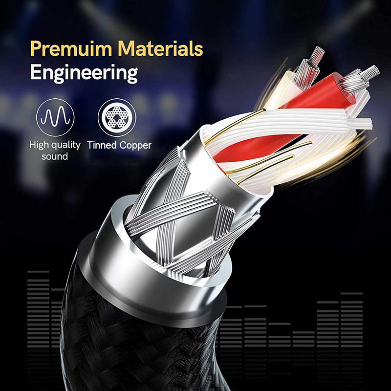
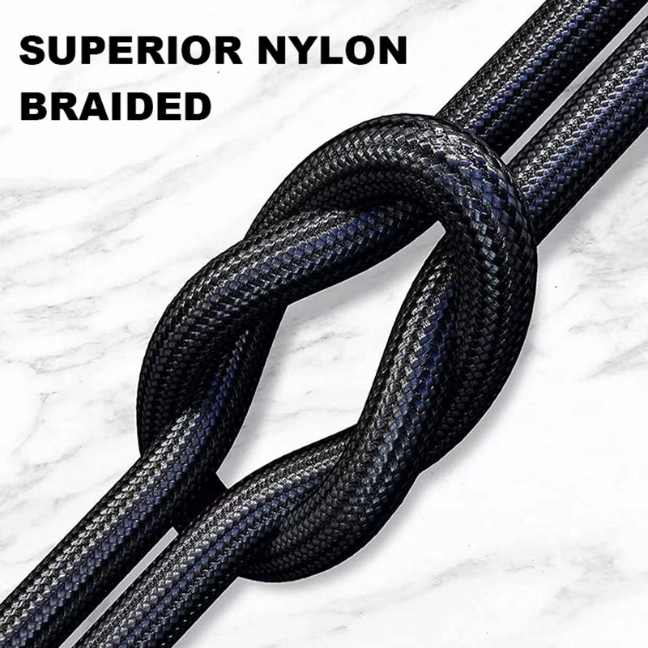
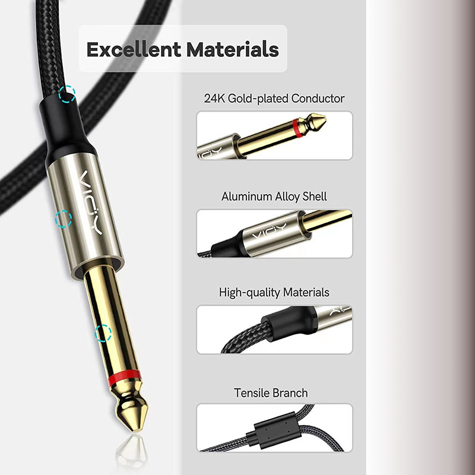
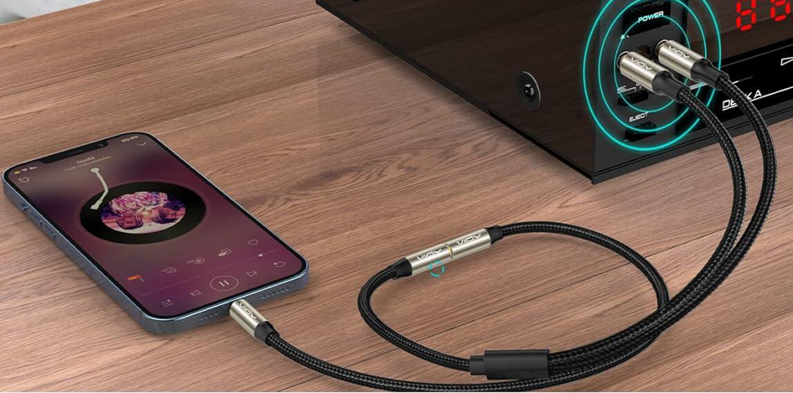

VIOY 3.5mm to Dual 1/4 Inch Audio Splitter Cable, Gold Plated 1/8" TRS Female to Dual Quarter Inch 6.35mm TS Mono Male Plug Braided Stereo Breakout Cable
⭐3.5mm to 1/4 Stereo Splitter Y Cable: Connecting your phone, speaker, laptop, or PC with a jack speaker output to a device with 2 x 6.35mm jack inputs. This 3.5mm female to dual 6.35mm male audio cable help you split the stereo input of 3.5mm(1/8 inch) jack into left and right channel output.
⭐Excellent Sound Transmission: VIOY 3.5mm to 1/4 adapter uses high-quality Tinned copper and dual shielding, prevents signal loss and transmits HI-FI pure sound quality, give us an immersive music experience.
⭐Bi-directional Audio Transmission: 3.5 mm balanced female plug is compatible with TRS/TRRS jack, in addition, the headphone with CTIA or OMTP jack is available. At the same time, the unbalanced 6.35 mm jack is stereo. So the flexibility in the use of this 3.5 mm to 1/4 cable can satisfy your demand. If you use the unbalanced 6.35 mm jack to connect the input, the other side will output the balanced sound you need and vice versa.
⭐Well-made Materials: 3.5mm to dual 1/4 Stereo Splitter Cable uses brass plating shell and gold-plated plugs, improved the durability and stability, reduce EMI/RFI interference. Cotton mesh braided covers prolong uses life.
⭐Compact Size: This 1/8 to 1/4 splitter cable length 0.44m/17inch.If you have any questions, please contact us promptly through AliExpress and we will reply to you within 24 hours

Look No Further - VIOY Top Series Cables Have It All !
The VIOY 1/8 in TRS to Dual 1/4 in TS Stereo Breakout Cable may seems a little pricey but if you're an audiophile it's worth every penny.
You know the clarity of the connection with this cable is going to be good when you find out it uses silver-plated copper wiring. The professional grade material also helps it give you that sound quality for a long, long period.

1-This cable is designed to split a stereo signal. White- and red-coded mono phone plugs indicate left and right respectively.
2-24K gold connectors are assured to be incorruptible by corrosion, enhanced nylon braided covers add the durability and withstand more wear-resistant on most application.
3-Triple shielding that runs through the entire length of the cable cuts out as much irrelevant noise as possible.
4-VIOY 3.5mm to Dual 1/4 TS Stereo Breakout Cable can be used on personal equipment such as Laptop, Phone, Tablet, MP3 and so on; and professional audio equipment such as Speaker, amplifiers, stereos, etc.

26 AWG 5N High-quality Tinned Copper
26 AWG 5N Tinned Copper with shielding ensure high fidelity sound quality and provide maximum conductivity and signal clarity.great choice for music lover.

Flexible Rubber and Nylon Braid Jacket
Heavy Duty Flexible Rubber and Nylon Braid Jacket Protect Your Cable, the outer diameter of the cable is 4.9 mm, Top quality and made by good material, improves high-frequency response, strong, flexible and durable

24K Gold-plated Connectors
With Heavy Duty 24K gold-plated 6.35 mm male and 3.5 mm female connectors, it could eliminate signal loss and static noise, provide durability and improve the signal transmission, and the copper shell blocks any interference which prevents the loss of sound quality

Package Contents
VIOY 3.5 mm Female to 6.35 mm 2 Male Audio Cable Gold Plated x 1
